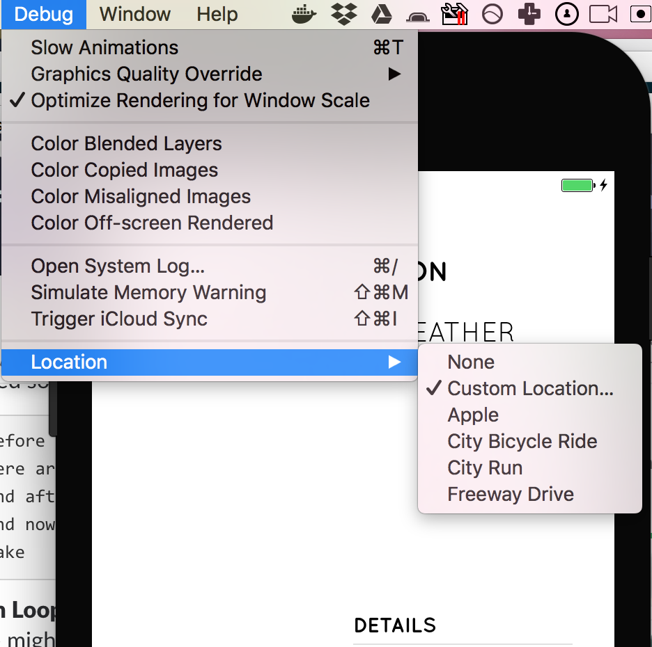
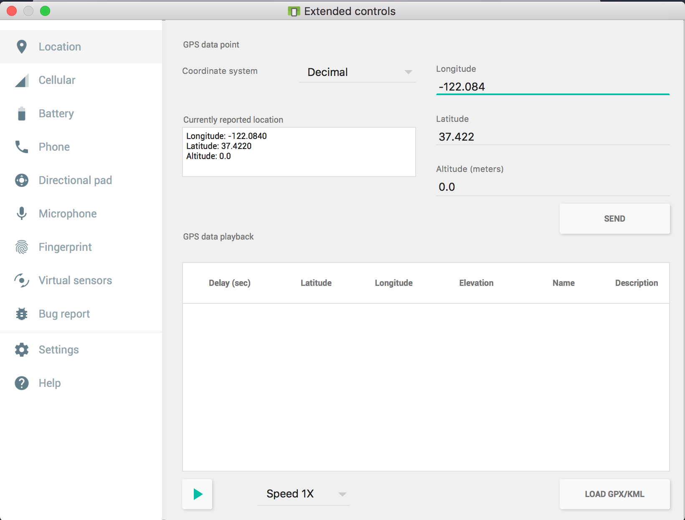

<!--
Copyright (c) 2016 Google Inc.

Licensed under the Apache License, Version 2.0 (the "License"); you may not
use this file except in compliance with the License. You may obtain a copy of
the License at

    http://www.apache.org/licenses/LICENSE-2.0

Unless required by applicable law or agreed to in writing, software
distributed under the License is distributed on an "AS IS" BASIS, WITHOUT
WARRANTIES OR CONDITIONS OF ANY KIND, either express or implied. See the
License for the specific language governing permissions and limitations under
the License.
-->
<link rel="import" href="../../step-style.html">
<link rel="import" href="../../syntax-style.html">
<dom-module id="step-4">
   <style include="step-style"></style>
   <style include="syntax-style"></style>

  <template>
    <p>Now we have a shell for our app's data and we need to start populating it. 
        Let's integrate the geolocation plugin and get our device's latitude and longitude.
        You are probably working on a simulator, so if you want, set your simulator's location to a custom
        area. On iOS, go to Debug > Location > Custom Location and enter a value.
    </p>

    
    
    <p>On Android, there is an extended control 
            menu that allows you to change the device's location.</p>

    
    

    <p>Now that you have set your simulators to listen for location data, 
        we need to install a plugin to get the app's geolocation.</p>

    <aside class="warning">
        <p>Make sure that you use the 3.0.1 version of the Geolocation plugin
            by opening the outer package.json file and changing the plugin version:
            <pre>
                "nativescript-geolocation": "^3.0.1",
            </pre>
        </p>
    </aside>
    <p>Next, add the following lines to the top of the app.js file under the declaration of the Vue constant:</p>

    <pre>
        const Geolocation = require("nativescript-geolocation");
        const Accuracy = require("ui/enums");        
    </pre>

    <aside class="special">
            <p>
              For iOS, you will also need to add a key to your Info.plist which is kept in App_Resources/iOS.
              Add the following to this file, right before the closing </dict> tag:
              <pre>
                    &#x3C;key&#x3E;NSLocationWhenInUseUsageDescription&#x3C;/key&#x3E;
                    &#x3C;string&#x3E;Let me get your weather while the app is open!&#x3C;/string&#x3E;
                &#x3C;key&#x3E;NSLocationAlwaysUsageDescription&#x3C;/key&#x3E;
                    &#x3C;string&#x3E;Let me always ping for the weather, ok?&#x3C;/string&#x3E;&#x9;
            
              </pre>
              This key will allow a popup to show, asking for permission to check location, which is mandatory on iOS.
            </p>
          </aside>

    <p>These two constants will be used to store our location preferences. Next, get the app to test for geolocation when it starts. 
        Populate the getMyWeather() method with the following:</p>

    <pre>
            Geolocation.enableLocationRequest();
            Geolocation.getCurrentLocation({ desiredAccuracy: Accuracy.high, updateDistance: 0.1, timeout: 20000 })
            .then(loc => {
                if (loc) {
                    this.getMyCity(loc.latitude,loc.longitude) 
                    //http call                                 
                }
            }, function(e) {
                console.log("Error: " + e.message);
            });
    </pre>
    
    <p>Next, we can get the city based on the latitude and longitude passed back from the Geolocation routine. 
        At the top of the file, add one more const:</p>
    <pre>const http = require("http");</pre>
    <p>Then use an open API to get the location name, based on the latitude and longitude, by completing the getMyCity() method:</p>

    <pre>
            console.log(lat,long)
            http.request({
                url: "https://nominatim.openstreetmap.org/reverse?format=json&lat="+lat+"&lon="+long+"&zoom=18&addressdetails=1",
                method: "GET"
            }).then(response => {
                var obj = response.content.toJSON()
                console.log(obj.address.city) 
                this.city = obj.address.city      
            })
    </pre>

    <p>In your terminal, you should be able to see the name of the city being returned by this API call as well as your simulator's preset latitude and longitude.</p>
   

    


    
  </template>
  <script>
    Polymer({
      is: "step-4"});
  </script>
</dom-module>
